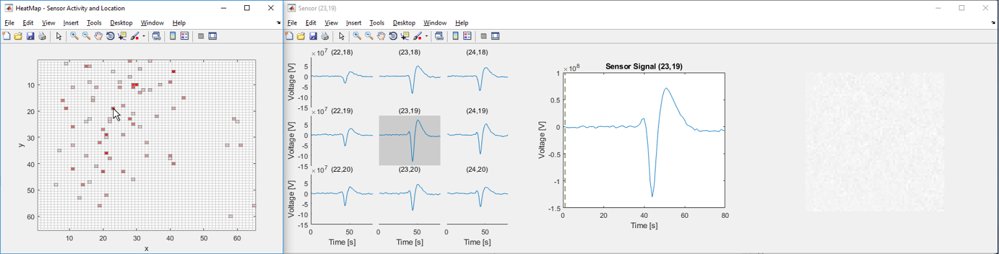

Loading data generated by CMOS-MEA software
Starting from version 2, CMOS-MEA-Control generates HDF5 files with the extensions .cmcr and .cmce, while CMOS-MEA-Tools generates HDF5 files with the extensions .cmtr and .cmte. All these files can be imported into Matlab with the command
data = McsHDF5.McsData('SOME_CMOS_MEA_FILE');
where 'SOME_CMOS_MEA_FILE' is the name of one of the HDF5 files mentioned above.
Error using evalin Undefined function or variable 'helpCmosMea'.
Contents
Up to this point, only the metadata has been read from the file. The actual data within the datasets will be loaded as soon as you try to access the datasets, for example in a plot function. The data is organized as follows within the data structure:
- Top-level: General information and a cell array of McsRecording objects:
data
- Each recording is stored in its individual cell:
data.Recording{1}
- Each recording can contain different data sources which may or may not be present in the file:
data.Recording{1}.Acquisition
data.Recording{1}.FilterTool
data.Recording{1}.SpikeExplorer
data.Recording{1}.STAExplorer
data.Recording{1}.SpikeSorter
data.Recording{1}.UnknownDataSources
- Each of the data sources has a typical data structure which will be explained below. The UnknownDataSources array contains all data sources that did not match any of the known data sources. The toolbox can't fully support these data sources.
Most streams and data sources have a 'Info' field which contains metadata about the stream or data source:
data.Recording{1}.SpikeSorter.Info
Some data sources also have a 'Settings' field that contains the settings that were used in the software for this particular tool:
data.Recording{1}.SpikeSorter.Settings
Acquisition Data Source
Data files generated by CMOS-MEA-Control with extension .cmcr will usually contain the recorded raw data, as well as different analog, event and spike streams in their Acquisition data source. The actual contents of the file depend on the settings used when recording the file. These contents are arranged as cell arrays of streams:
data.Recording{1}.Acquisition.ChannelStream
data.Recording{1}.Acquisition.EventStream
data.Recording{1}.Acquisition.SensorStream
data.Recording{1}.Acquisition.SpikeStream
The contents of the ChannelStream, EventStream and SensorStream arrays are described in more detail in the DataManager help page of the Toolbox.
For files generated by CMOS-MEA-Tools, the Acquisition source will usually just be a link to the .cmcr file from which the results have been generated
SpikeStream and SpikeExplorer
The SpikeStream array of the Acquisition data source and the SpikeExplorer data source both hold spike streams objects. These contain the results of channel-wise spike detection:
data.Recording{1}.Acquisition.SpikeStream{1}
data.Recording{1}.SpikeExplorer
The spikes are stored in the SpikeData field. They will be loaded from the file when the SpikeData field is accessed for the first time:
data.Recording{1}.Acquisition.SpikeStream{1}.SpikeData
FilterTool
The FilterTool data source contains information about the filter pipeline defined in the CMOS-MEA-Tools software. The details of each filter can be found in the Pipeline field:
data.Recording{1}.FilterTool.Pipeline{1}
STAExplorer
The STAExplorer data source holds the results of the STA Explorer Tool in CMOS-MEA-Tools. The STAs are stored in its STAData field and read from the file only when the STAData field is accessed for the first time:
data.Recording{1}.STAExplorer.STAData
Metadata about the STAs can be found in the STAInfos field:
data.Recording{1}.STAExplorer.STAInfos
Reading a subset of STAs from the STAExplorer
In order to save memory, it is possible to load only a subset of STAs from the file instead of all of them. To achieve this, one needs to take care to not directly access the STAData field as this would trigger loading them from the field. Instead, one has to load first the metadata and then use the readPartialSTAData function:
data = McsHDF5.McsData('SOME_CMOS_MEA_FILE');
cfg = [];
cfg.sta = [2 4 8];
stas = data.Recording{1}.STAExplorer.readPartialSTAData(cfg);
'stas' will be a McsCmosStaExplorerSource object, containing the 2nd, 4th and 8th STA of the original data. In order to find out, which indices to use in the cfg.sta array, you can access the STAInfos field which contains the metadata for each STA and is loaded from the beginning:
data.Recording{1}.STAExplorer.STAInfos
SpikeSorter
The SpikeSorter data source holds the results of the Spike Sorter Tool in CMOS-MEA-Tools. The UnitInfos field contains some details about each extracted unit, such as its location on the chip and the extracted quality measures:
data.Recording{1}.SpikeSorter.UnitInfos
It also contains a projection matrix that transforms raw data to the source signals of the units. For more information on how to perform this projection, please consult the CMOS-MEA software manual:
data.Recording{1}.SpikeSorter.ProjectionMatrix
Each extracted unit has its own entry in the UnitEntities array:
data.Recording{1}.SpikeSorter.UnitEntities{1}
For each unit, this data structure stores information about the extracted (spike) peaks, STAs of channels in its vicinity, the trace of its source signal and the coefficients for the projection from raw data to its source signal:
data.Recording{1}.SpikeSorter.UnitEntities{1}.Peaks
data.Recording{1}.SpikeSorter.UnitEntities{1}.RoiSTAs
data.Recording{1}.SpikeSorter.UnitEntities{1}.Source
data.Recording{1}.SpikeSorter.UnitEntities{1}.Unmixing
With the exception of the 'Unmixing' field, the contents of these fields are loaded from the file only when the field is accessed for the first time. Metadata about these fields can be found in the respective Info fields (PeaksInfo, RoiSTAsInfo, ...)
Plotting
Simple plot functions exist for the streams in the Acquisition data source:
plot(data.Recording{1}.Acquisition.ChannelStream{1},[])
plot(data.Recording{1}.Acquisition.EventStream{1},[])
plot(data.Recording{1}.Acquisition.SensorStream{1},[])
plot(data.Recording{1}.Acquisition.SpikeStream{1},[])
If for example the event stream and the spike streams have not been accessed before, their data is loaded during the execution of the respective plot function.
plot functions can also be accessed at Acquisition, Recording or top level, in order to get an overview over all streams in the file/recording:
plot(data.Recording{1}.Acquisition,[]) plot(data.Recording{1},[]) plot(data,[])
If the second parameter of the plot function is empty, the default parameters are used for plotting. Otherwise, one can specify configuration structures for more fine-grained plotting. For example, the following commands will plot channels 1 and 2 of the second analog stream:
cfg = [];
cfg.channel = [1 2];
plot(data.Recording{1}.Acquisition.ChannelStream{2},cfg);
Each plot function has its own set of options, so you need to check the individual help functions for the specifics:
help McsHDF5.McsEventStream.plot
You can specify these configuration options also in higher level plot functions to achieve the same thing:
cfg = [];
cfg.acq.analog{2}.channel = [1 2];
plot(data.Recording{1},cfg);
cfg = [];
cfg.conf.acq.analog{2}.channel = [1 2];
plot(data,cfg);
You can also specify additional options in the plot function. These are forwarded to the underlying MATLAB plotting functions. The following command produces a time series plot of the first analog stream with thick dashed red lines:
plot(data.Recording{1}.Acquisition.ChannelStream{1},cfg,'--r','LineWidth',5);
Interactive Plots
Plot functions for the STAExplorer data source and the SpikeSorter data source produce interactive figures, i.e.
plot(data.Recording{1}.STAExplorer,[])
plot(data.Recording{1}.SpikeSorter,[])
The STAExplorer data source plot produces a Heat Map that visualizes the location of each detected sta and the realtive number of contributing sweeps. Upon clicking an non-active sensor on the Heat Map, labels for all units may be switched between visible and invisible. Clicking an active sensor opens a separate figure with corresponding detailed information. Namely, three graphics appear:

- the signals of all sensors in a defined neighborhood of the clicked sensor
- the signal of the clicked sensor
- an animation showing the STA across the entire sensor array over time
The animation may started/paused by clicking into it. A bar in the magnified signal plot (middle) shows the timely position of the animation within the recording. By clicking into the signal, the current animation frame may be changed.
For more detailed information on configuration options please refer to the specific function help
help McsHDF5.McsCmosStaExplorerSource.plot
The SpikeSorter data source plot visualizes the entire sensor array. Several components of the visualization, including the grid, labels, etc., are configurable prior to calling the plot function. However, they may be adjusted via the interface as needed. Upon clicking a unit, the plot function for the corresponding SpikeSorter unit is called.
For more detailed information on configuration options please refer to the specific function help
help McsHDF5.McsCmosSpikeSorterSource.plot